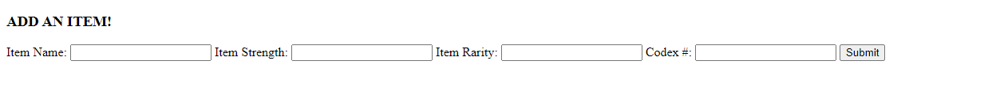
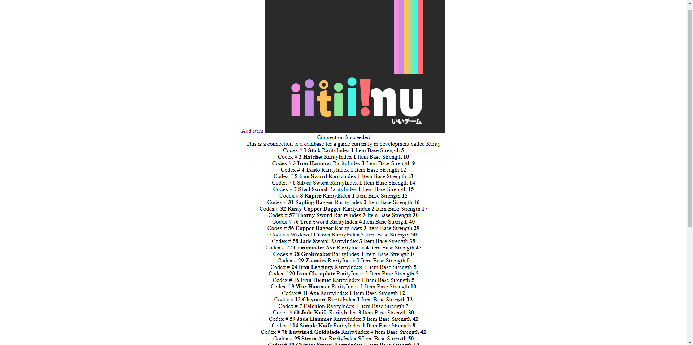

Rarity
- Genre: Action, Adventure, Dungeon Crawler, Collectathon
- Team: IITIIMU
- Project Length: 5 months
- Project URL: ii-tiimu.itch.io/rarity
Game Description:
Rarity is a 2.5D action RPG/dungeon crawler for PC in which you loot randomized dungeons in your quest to become the ultimate collector. You collect items similarly to how you would collect trading cards, with the end goal being to collect all the pieces, no matter how rare.
In-depth description of my contributions
Early Stages and Initial Thought Process:
I made sure to focus on using only 2 keys for gameplay, one primarily used for interactions while the other for abilities,
and of course, most importantly I made sure to keep in mind to reflect on the enjoyment of the gameplay before implementing any feature.
From there, I started to program the basic gameplay mechanics such as, Movement, Combat, Abilities, and Enemies.
Of course, I did not do all of that immediately, I made sure to finish all the mechanics neccessary for a playable prototype first.
I started with Movement, followed by Combat, which was the weapon "swinging", then implemented enemies which can hurt you.
Programming the usage of the charms/abilities came after we made sure the playable prototype was solid and working.
Mid-Stages:
- Minimaps
- Equipping Clothes
- Quick Drag (Shift+Click seen in games such as Minecraft)
- AI Movement & Combat
One of the problems faced and how I overcame it:
My solution was to create 2 types of Enemy Classes, a Melee class and a Ranged class. The melee class would contain values such as, fire-rate, attack range, and a function used as a trigger event at the end of the animation to inflict damage. While the range would contain a fire-rate value, and an object which is spawned as a projectile which inflicts damage when hitting the player.
This type of design was broad enough to implement into the unique enemies we had described in the Game Design Document(GDD). For Example, we wanted to implement a "Spin Enemy" with circular blades which would damage the player at a high rate when hit. With the classes I have programmed, all the designer had to do was to use the normal melee enemy, change up the animations, and increase the fire-rate.

Reflection:
My role as the systems programmer:
Systems I worked on:
The system's I worked on will be listed below along with it's descriptions:
Monologue/Dialogue System: A system built for the writers to use when implementing monologues/dialogues. The system contains many arrays of predetermined strings used as monologue/dialogue, and all the writer had to do was edit these string inside the engine depending on which scenario the monologue/dialogue is set. In the game itself, each scenario a monolgue/dialogue is used, a function is called from this monlogue/dialogue system taking in a string array as the parameter, which it will spawn a UI prefab and then iterate the array line-by-line in the UI. And of course, the system records the "SPACE" input to skip/proceed to the next line.
Chest System: The chest system is simple. It is a prefab which can be placed into the scene, each chest will be placed into 3 different groups, which upon starting the game, the code selects a one of the chest groups randomly on which will stay in the scene, while the others are destroyed. This creates a spawn system which feels randomized but at the same time it is manually hand-placed into the game. As for selecting the contents inside the chest, I have a declared some variables which designers can adjust depending on what kinds of contents he wants in that specific chest.
Inventory System: One of the things I spent the most time polishing is definitely this system, the inventory system. The inventory is split up into 3 parts: the character item slots, the backpack, and the toolbar. In my opinion the hardest part of this system was the transfer of items into different parts of the inventory, since one of them requires the item to be displayed different (as a card). The other things this system features is a sorting feature in the backpack, which sorts the item by it's Rarity.
Cutscene System: To be honest, the cutscene system in this game could be improved in terms of efficiency. The cutscene system is a Pre-placed UI object containing a timeline, which is spawned into the scene once a cutscene function is called, the object contains a "Play On Awake" timeline which will start playing and destroys itself once done playing.
Item Storage System: Now for a game similar to Rarity, you might be wondering where all the 100 items are kept. That answer is simple, Rarity keeps it's items in a database which is further explained in the "As a Backend developer" section of this page. Rarity, however does not constantly try to connect to the database constantly as it is an online database and it may cause issues. So I have created a 'Database Manager' object with a Refresh button in the Unity game engine, which then retrieves data from the online database, and disconnects once it's done. This particular object will then be the 'Hub' for retrieving item data and is utilized in systems such as the chest, the inventory, and the codex.
What I did as a backend developer:
A screenshot of the page where they can add items 
A screenshot of the webpage displaying items

and of course, here is the link for anyone wanting to check it out: rarity-iitiimu.herokuapp.com